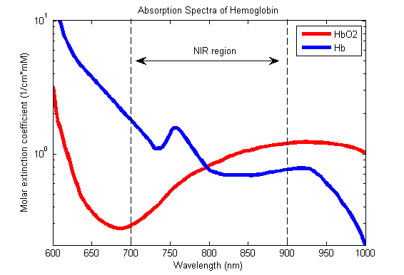
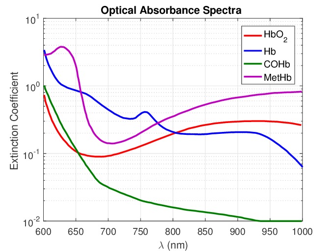
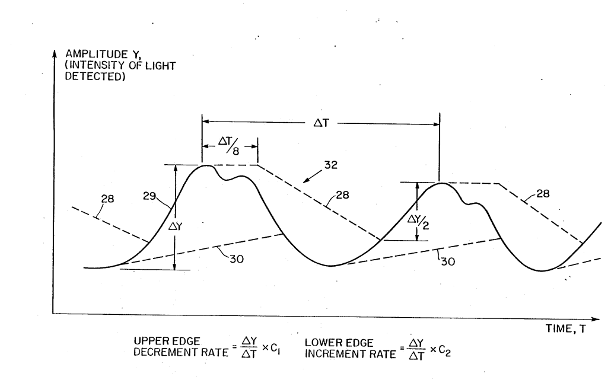

Hi there! Here's the link to this section of the website. Link
*** Please remember to change and update this before handing in ***
Research Notes 2: Pulse Oximeter Function and Flaws
17th of October, 2022
Luca Donais
To be more precise from the last research notes, pulse oximeters are sensors that use light to measure the concentration of oxyhemoglobin (hemoglobin that is oxygenated) in the blood, as compared to deoxyhemoglobin (hemoglobin that is deoxygenated).[14] In principle, that is not very difficult to do; Beer-Lambert’s law, a formula for determining the absorbance of a mixture of solute and solvent (in this case, hemoglobin in blood) to a given wavelength of light, can be rearranged to solve for the concentration (C) of a given solute within a solvent, given the light path length (d), a measure of the distance that light travels, which is different from the physical distance that the light travels due to refraction[15]; the absorbance (𝛼) of the solution, or the quantity of light that is absorbed by the solution; and the extinction coefficient (𝜖) of the solute, which is the light absorption of the solute at a given wavelength.[14]
This, however, is not enough to determine blood oxygen saturation (SaO2). Beer-Lambert’s law will determine the concentration of oxyhemoglobin within the volume of blood contained within the finger, but that is unhelpful, as the figure that is important in this case is the proportion of oxyhemoglobin as compared to all hemoglobin in the blood.[14] Therefore, our pulse oximeter will have to use two lights at different wavelengths, repeating Beer-Lambert’s law for each; one being to determine the concentration of oxyhemoglobin in the blood, the other being to determine the concentration of deoxyhemoglobin in the blood. Following that, it’s a simple task of dividing total hemoglobin (Hb + O2Hb) by oxygenated hemoglobin (O2Hb) and then multiplying the result by 100 to obtain a human-readable percentage, as in the formula shown below[14] (SpO2 being the SaO2 reading returned by the oximeter).
The reason this works is that oxyhemoglobin has a slightly different absorption spectrum than deoxyhemoglobin.[18] In layman’s terms, this means that it has a slightly different color; though nothing nearly as drastic as the popular perception that deoxygenated blood is blue. This difference is illustrated on the graph below. The red line represents the absorption spectrum of oxyhemoglobin (HbO2), and the blue represents the absorption spectrum of deoxyhemoglobin (Hb). On the lower end of the spectrum, around the 660 nm wavelength of light that is typically used, which is visible red light, deoxyhemoglobin absorbs much more light. However, on the higher end of the scale, around the 940 nm wavelength, which is infrared light, oxyhemoglobin absorbs much more light. This allows us to effectively isolate the types of hemoglobin from each other by using wavelengths of light on either end of the absorption spectrum.
 A graph of the absorption spectra of oxyhemoglobin and deoxyhemoglobin in the near-infrared band of light.
However, we are once again not finished. The important reading is arterial oxygen saturation, since veins are completely expected to contain nearly all deoxygenated blood.[22] Therefore, not only does the oximeter have to isolate the types of hemoglobin from each other, it also has to isolate the parts of the reading that come from arteries from those that come from veins. This is accomplished by the fact that arteries pulsate with the heartbeat, while veins (by and large) do not.[21] Therefore, the device can isolate the parts of the reading which are pulsating and only use those[22] - this is where the “pulse” part of pulse oximeter comes from. A side effect of this method is that pulse oximeters, by their nature, also measure heart rate.
Despite its incredibly clever design, pulse oximeters do have a few flaws, most notably in cases in which they simply will not give accurate results. These are in cases of carbon monoxide poisoning and of methemoglobinemia. Carbon monoxide poisoning causes issues because carbon monoxide (CO) binds readily to hemoglobin, creating carboxyhemoglobin, which has a very similar emissions spectrum to oxyhemoglobin at the 660 nm where it is typically measured. This means that CO can effectively mask its presence to the oximeter, presenting as normal oxygen and giving a dangerously misleading impression of the reading.[14, 16] The other misleading result that pulse oximeters tend to give is in patients with a type of anemia called methemoglobinemia. Methemoglobin is a form of hemoglobin that cannot carry oxygen, meaning that blood full of methemoglobin will not be able to carry oxygen to the body’s tissues. This is, of course, very dangerous. However, because of methemoglobin’s substantial absorption spectrum on both the 940 and 660 nm wavelengths of light used in most traditional pulse oximeters, when it is in concentrations at or above about 30% it causes the oximeter to incorrectly read near 85% regardless of the patient’s true saturation.[14, 16, 17, 20]
 A graph of the absorption spectra of oxyhemoglobin, deoxyhemoglobin, carboxyhemoglobin, and methemoglobin in the near-infrared band of light.
There exist oximeters which get around these issues by using more wavelengths of light; with more reference points, in some cases as many as 8,[16] it becomes possible to isolate methemoglobin and carboxyhemoglobin in the reading and overcome these limitations. However, methemoglobinemia is very rare and carbon monoxide poisoning is only a risk in very specific circumstances; for instance, if someone presents to a hospital emergency room, there is little point to screening them for carbon monoxide poisoning, since being away from the source of the carbon monoxide and in fresh air will in almost all circumstances cause their symptoms to dissipate. For that reason, most pulse oximeters in use today continue to have these limitations.
That's all for now. I'll be back at some point with yet another dive into pulse oximetry, though hopefully a bit less dense this time.
See you next time,
Luca.
Research Notes 1: Intro to the Research Notes Format and Pulse Oximeters
15th of October, 2022
Luca Donais
If you’ve ever been to a hospital emergency room, you’ve probably had one of these little doodads clipped onto your finger. As a child, I ended up in the hospital quite a lot, and was never quite sure what they were for. At the time, I never bothered to ask; but having been back in the hospital a few times in the last year or so, my childhood curiosity came back to me. This time though, I had the advantage of the internet and the ability to read patent filings. And also the lack of self-respect required to be willing to read very dense patent filings with graphs that look like this.[13] Joy!
 A graph from a 1988 patent filing for a pulse oximeter.
To google it was, then. Cursory research told me that these are called pulse oximeters, and that they are sensors that measure the oxygen saturation in your blood.[14] That threw me for a loop a little bit. Blood lives inside the body, and so to measure most things about it, you need to remove some and analyze it in a lab. However, pulse oximeters dispense with all that unpleasantness, giving an at-a-glance view of respiratory system function within seconds. That is an incredible tool, but also seems to break just about all of the rules. How is it possible for that to work?
Well, I’m going to deal with that next time. This post is an introduction to the “Research Notes” format, which will be a little shorter and less formal, and will be more focused on diving into topics that interest me or that are relevant to coursework. It will be a place for me to organize my thoughts and dump some sources, as well as a place to talk about things that interest me!
See you next time,
Luca.
California Bans Sales of Fossil-Fuel-Burning Cars by 2035
12th of October, 2022
Luca Donais
Today, I read an article by Naveena Sadasivam in Grist Magazine titled “It’s official: California is phasing out gas-powered cars by 2035”[8]. The article was fascinating, and it brought up a number of interesting policy questions around health, climate, and other major issues in the world today. The policy is built on an executive order[4] passed by California governor Gavin Newsom. To be quite honest, as a serious piece of policy, I find the executive order and what has been built around it rather lackluster. While it is true that electric vehicles (EVs) are an important tool in combating climate change, they are not in and of themselves a solution. There are a whole raft of environmental, social, and health issues that EVs are either not equipped to address, or that they will actively worsen.
My biggest gripe with this policy is that the solution remains car-centric, with little recognition of the very real harms that personal automobiles cause to individuals and society. Cars are an extremely inefficient mode of transportation, both in terms of space efficiency within cities[6] and in terms of energy efficiency[11], as compared to high-occupancy vehicles like buses and especially trains. In addition, public transportation has shown benefits in increasing social mobility[1], increasing the general health of those who take it through increased physical activity, and thus, reducing healthcare costs to society[9], and other benefits. In addition, public transit is also significantly safer than personal cars. Per-kilometer, you’re about 17 times more likely to die in a car than on a train, and about 100 times more likely to die in a car than on an airplane. In the US, about 80 people die in cars every day, all in service of a mode of transit that is less efficient and more dangerous than the alternatives.[10]
A tesla after a crash.
There are also environmental concerns around EVs that should not be dismissed. While their environmental benefit, by taking gas-powered vehicles off the road and thus removing emissions, is clear, so is their environmental detriment. The mining of the various materials needed to manufacture electric cars, particularly lithium and cobalt, is environmentally ruinous. Lithium mining alone requires vast amounts of water; one proposed mine in the United States is expected to use billions of gallons of it — 14 356 liters per minute, some of which may remain contaminated for as many as 300 years[5]. The mines also create enormous quantities of chemical waste and destroy animal habitats, all at great expense to taxpayers in the form of mining subsidies and grants.
A lithium mine.
With all this talk of environmental and urban policy, we’ve largely ignored the other major topic of this blog, which is health. The article correctly points out that there are major health benefits to reducing greenhouse gas emissions and smog in cities, which contribute significantly to various respiratory and circulatory illnesses like asthma and heart disease[8, 12]. However, there are some hidden assumptions in this assessment that I believe are worth interrogating.
Mining for cobalt, an essential component in EV production, happens mostly in the Democratic Republic of the Congo (DRC), which produces about 60% of the world’s cobalt[3]. For context, the DRC is a country with about 3% of Canada’s GDP (despite having well over twice our population), and about 0.24% of the United States’ GDP. The mining of cobalt is horrible for the environment, and almost as bad for the health of the miners. In an ironic twist, it produces significant and toxic air pollution, which can cause asthma and pneumonia, among other respiratory issues. Some particles emitted in cobalt mining are radioactive or cancer-causing, and have been known to cause cancer, vision problems, and thyroid problems[3]. It also has wider social impacts; cobalt mining in the DRC has been linked to increased violence, substance abuse, food and water insecurity, loss of communal land, farmland, and homes, mental health challenges, and other detrimental impacts.[7] While the health benefits of reducing pollution are self-evidently good things, this policy and others focused on electric vehicles simply export our health and social issues into places where people are too stricken with poverty to argue, in service of reducing the climate guilt of those who are already wealthy.
In the end, this is probably a step in the right direction. However, there are a million better ways to step in this direction, many of which are less counterproductive to the policy’s stated goals. Like building a train. I’d even settle for some buses. Please.